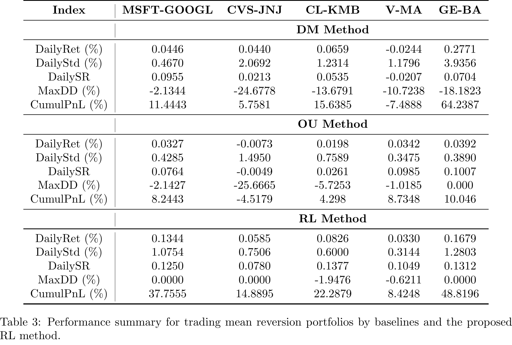
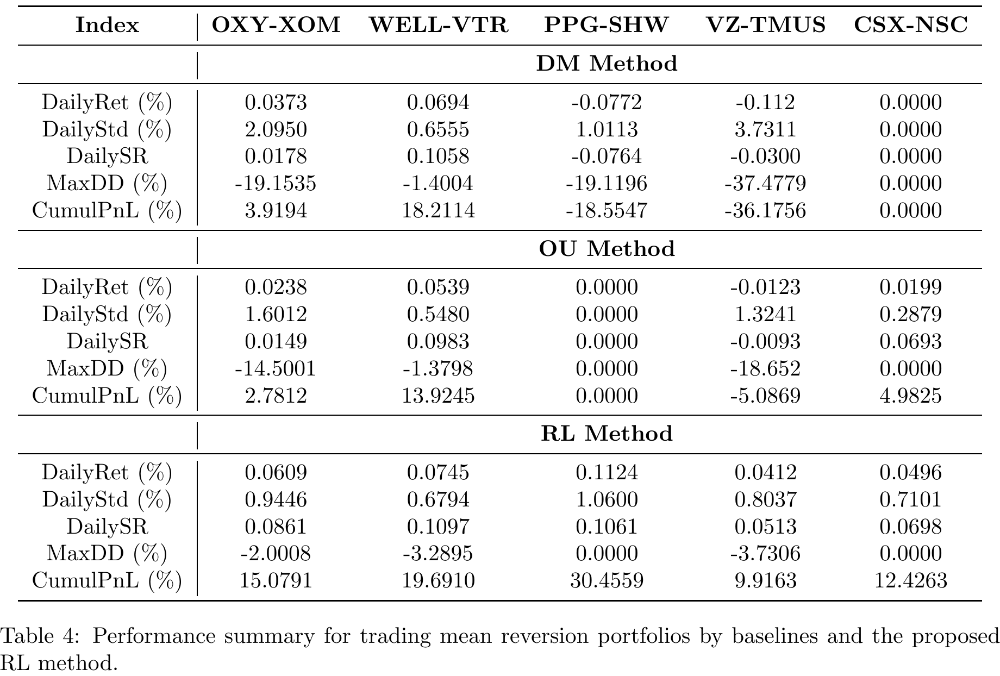

| Phase | Traditional approach | This paper |
|---|---|---|
| Part 1 · Which spread to trade | Hand-fit B (Distance Method or OU) | EMRT — B chosen to minimize empirical reversion time |
| Part 2 · When to trade it | Fixed threshold rule (e.g. trade at ±1σ) | Q-learning — a policy learned from experience |
Reward for today's action
= Rt+1 + γGt+1 (random)
One fixed number per cell


| Design dimension | Ning & Lee (2024) | Our vega-pairs project |
|---|---|---|
| Underlying spread | Price spread S₁ − B·S₂ of two equities | IV spread between two ATM straddles, initially vega-neutral |
| Formation | Grid search over B to minimize EMRT | Fixed economically-motivated sector pairs (AMD/NVDA, XOM/CVX, JPM/BAC, HD/LOW) |
| State space | Discretized recent return direction, 4l buckets | Regression-tree leaves over IV spread + earnings + RV + VIX (4–16 states) |
| Action space | 3 actions: sell / hold / buy (position-gated) | 9-level signed sizing ladder: direction × 0/25/50/75/100%, per-pair fixed budget |
| Reward | At·(θ−Xt) − c·|At| | size × forward relative-value payoff − 2.5%×avg entry IV×size |
| Training | Sequential — tabular Q-learning on simulated OU paths | One-shot — contextual bandit, cross-entropy policy search, real data, expanding-window walk-forward |
| Benchmark story | RL vs. Distance Method vs. OU thresholding | Learned sizing vs. supervised NN full-size/flat vs. simpler feature set |
one of 9 actions per state, drawn from that state's current action distribution
the whole candidate policy, scored at once — see formula below
nudge each state's action distribution toward the top ~10%'s choices
| Policy | Annualized payoff Sharpe |
|---|---|
| AMD / NVDA | 0.635 |
| XOM / CVX | −0.070 |
| JPM / BAC | −0.012 |
| HD / LOW | −0.105 |
| Combined, fixed equal budgets | 0.499 |
Entering or exiting costs a small fee; holding earns or loses that day's P&L; staying flat costs nothing.
Every past day that shared this exact state and action is pooled together, so one noisy day becomes a dependable average.
Repeatedly updated from itself until nothing moves — not nudged forward one lived experience at a time.